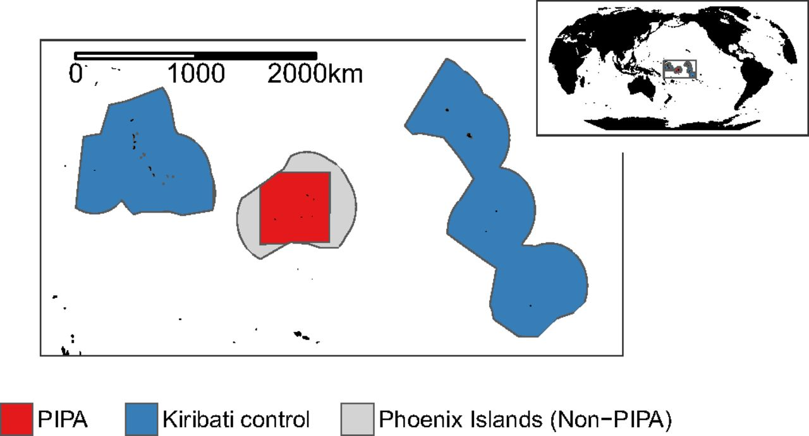

Causal identification
Common refrain.1
“Correlation does not necessarily imply causation.”
Why might correlation fail to describe a causal relationship?
- Omitted-variables bias
- Selection bias
- Simultaneity
- Reverse causality
- Coincidence
Causal identification
Common refrain.2
“Correlation does not necessarily imply causation.”
Correlation may imply causation if we assume “all else equals”
- Hold everything fixed
This assumption is fragile in the real world.
Solutions:
- Conduct experiments
- Find a natural experiment
Experiments
How can we ensure the all else equals assumption holds?
Randomization
Randomized Controlled Trails (RCT)
- widely used across many scientific disciplines3
- often touted as the gold standard of causal identification
- use randomization to ensure all else equals
In 2019, the Nobel Prize winners adapting RCTs to projects in development economics4
Experiments ex.
Research question
Does health insurance improve health?
The all else equals assumption would require:
- all preexisting correlates with health must be the same across insured and uninsured
What would violate this assumption?
If more money is correlated with better health, and the average income of those who buy health insurance is higher, then we violate this assumption
Experiments ex.
But what if health insurance is randomly assigned?
- Then, assuming the assignment is perfectly random across a large enough sample size, this assumption becomes much more palatable
Oregon Health Insurance Experiment
The Oregon Health Insurance Experiment is a landmark study of the effect of expanding public health insurance on health care use, health outcomes, financial strain, and well-being of low-income adults… In 2008, the state of Oregon drew names by lottery for its Medicaid program for low-income, uninsured adults, generating just such an opportunity. This ongoing analysis represents a collaborative effort between researchers and the state of Oregon to learn about the costs and benefits of expanding public health insurance.
Natural experiments
An external, non-experimental factor creates circumstances that resemble a controlled experiment
Real-world events provide opportunity to compare similar groups
With some assumptions, researchers infer the causal relationships examining differences in outcomes between groups
Natural experiments ex.
Green paradox
An outcome in which climate policies instead have the opposite effect.
Ex. Carbon taxes: A carbon tax is announced to start at sometime in the future—aimed at reducing carbon emissions
However, for a short amount of time, emissions increase… Why? Theory dictates:
- If firms are informed of the policy, they will expect the price of pollution to increase in the future.
- Thus, they have incentive to pollute more now
Natural experiments ex.
Blue paradox
- Recent study by Grant McDermott and coauthors.
Question: Do commercial fishers preempt fishing bans by increasing their fishing effort before the bans go into effect?
Motivation:
- Recent conservation seek to preserve habitat and increase fish stocks.
- Policy lever: Restrict fishing activity in marine protected areas.
- Concern: Preemptive behavior could decrease fish stocks.
Data: Vessel-level data on fishing effort/intensity.
Natural experiments ex.
Blue paradox
Setting
Phoenix Islands Protected Area (PIPA)
- Policy announcement on September 1, 2014
- Implemented 1 January 2015.
- Treatment group: PIPA.
- Control group: Outlying Kiribati islands.
Natural experiments ex.
Blue paradox
Result

Natural experiments ex.
Blue paradox
Identification strategy: Differences-in-differences5
Measure the causal effect of the fishing ban by comparing fishing effort in treatment and control regions, before-and-after PIPA.
Parallel trends assumption.
“Define a control region that plausibly exhibits the same trends in fishing effort over PIPA, had the marine reserve never been implemented or anticipated.”
Beleiving this assumption is key to a causal interpretation
Natural experiments ex.
Blue paradox
Result

Each data point shown in Top indicates total daily fishing hours per 1,000 km2 within the PIPA (red) and Kiribati control (blue) regions during the January 1, 2012 to December 31, 2016 period. These high-frequency observations are aggregated from GFW’s boat-level data, which use various classification algorithms to assign boat activity as either “fishing” or “not-fishing” (12). January 1, 2015 marks the first date of PIPA implementation (dashed vertical line). September 1, 2013 corresponds to the earliest mention of a possible full closure of PIPA to fishing according to global Google search activity for the terms “Phoenix Islands Protected Area” and “closure” (19). To reduce noise, we fit a restricted cubic spline (solid lines) to flexibly model the relationship between fishing effort and time separately for each region and for the periods before and after PIPA implementation. Our spline functions use six evenly spaced knots (25).
We highlight three results from Fig. 3. First, trends in fishing effort from January 2012 to August 2013 in PIPA and the Kiribati control regions are parallel and nearly identical. Furthermore, there appears to be no change in fishing effort for the Kiribati control region after August 2013. This suggests that fishing around the Line and Gilbert Islands serves as a reasonable control for fishing in PIPA. Second, consistent with the presence of a blue paradox, there is a clear divergence in fishing effort after public awareness about the closure began to grow (around September 1, 2013) and before the start of PIPA implementation on January 1, 2015. While we cannot directly measure boat captains’ expectations about a possible future closure, this surge in preemptive fishing within PIPA relative to the control region occurred presumably because fishing vessels anticipated the eventual arrival of the marine reserve before its implementation. Third, fishing in PIPA falls to nearly zero after the marine reserve is established, consistent with previous literature (11, 12), but fishing in the control region is little affected. This again confirms the validity of our control area.
Fig. 3, Bottom examines whether this difference in preemptive fishing is statistically significant. It shows the estimated restricted cubic spline function for the difference in fishing effort across the PIPA and control regions (see Eq. 1 in Materials and Methods). The associated 90% CI, which is robust to serial correlation and heteroscedasticity of arbitrary form within a 60-d time window (26), shows that this difference in fishing before PIPA implementation is statistically significant for the period starting late 2013 until PIPA implementation.
Natural experiments ex.
Blue paradox
Discussion
Results provide causal evidence that commercial fishers engage in preemptive behavior in response to conservation policy changes.
Results are consistent with economic theory, but cannot prove that the theory is correct.
- Science cannot prove anything.
- Science can falsify or reject existing hypotheses or corroborate existing evidence.
Natural experiments ex.
Blue paradox
Furthermore, the causal statement rests on a critical assumption.
- Cannot prove that the assumption is true, but can falsify it.
- Failure to falsify \(\neq\) assumption is true.
Footnotes
Ex. Number of people who drowned by falling in pool and Nicolas Cage films↩︎
Ex. Number of people who drowned by falling in pool and Nicolas Cage films↩︎
Medicine, psychology, education, agronomics among many others↩︎
Duflo, Banerjee, and Kremer↩︎
More about this identification strategy at the end of the course↩︎